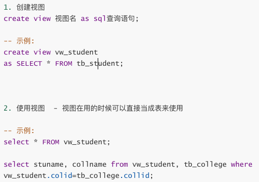

SQL3
一、内连接和外连接
1. 内连接
之前的查询其实就是内连接，内连接有两种写法：
select * from 表1, 表2, 表3, ... where 连接条件 查询条件;
select * from 表1 inner join 表2 on 表2的连接条件 inner join 表3 on 表3的连接条件 ... where 查询条件
-- 注意：
-- 如果不写连接条件，最后会形成笛卡尔积现象
-- 方法二中，中间表必须放在最前面2. 外连接
在MySQL中，外连接只支持左外连接 left foin 和右外连接 right join
表1 left join 表2 on 连接条件
-- 先将表1的记录全部取出来，按连接条件去依次连接表2中的记录，表1中不满足连接条件的记录会保留，但连接记录会为空；表2中不满足的不会获取到
-- 先表1，再表2，表1全，表2连
表1 right join 表2 on 连接条件
-- 先表2，再表1，表2全，表1连，原理同上二、DCL (数据控制语言)
DCL主要提供授权和召回授权以及事务等相关功能
1. 用户管理
一般root账户才有的权限
1）创建用户
create user 用户名@登录地址;
-- 创建指定的数据库用户，该用户登录时不需要登录密码
-- 说明：
-- 登录地址：ip地址/localhost(本机)/%(任意位置)
create user 用户名@登录地址 identified by '密码';2）删除用户
drop user 用户名@登录地址
2. 授权管理
1）授权
grant 权限类型 on 数据库.表 to 用户名
-- 权限类型：
-- insert
-- delete
-- update
-- select
-- create
-- drop
-- ...
-- all privileges (所有权限)grant select, update on school.tb_stusent to user12）召回授权
revoke 权限类型 on 数据库.表 from 用户名@登录地址;
revoke select, update on school.tb_stusent from user1@localhost
3. 事务
如果完成一个任务需要多个操作，但是要求多个操作中只要有一个失败，那么整个任务取消，让数据回到任我开始前的状态；
只有所有的操作都成功了，数据库才更新，这个时候就用事务
begin; -- 开启事务环境
事务代码
commit; -- 提交事务环境中的操作结果
rollback; -- 回滚 (失败后数据恢复)4. 视图
视图使用来存储一个sql查询语句的结果。相当于给查询语句的结果创建一张临时表，但是这个临时表不占物理内存。

4. 索引
索引就像书的目录，记录了书的位置，可以提高查询速度。(空间换时间)
- 索引会占用额外的空间
- 索引会让增删改变得更慢
一般需要给使用频率最高的字段添加索引。(主键自带索引 - 唯一索引)
1）添加索引
给指定字段添加普通索引：
creat index 索引名 on 表名 (字段)
给指定字段添加唯一索引：
creat unique index 索引名 on 表名 (字段)
注意：字段值唯一的时候才能添加唯一索引！
2）删除索引
alter table 表名 drop index 索引名;
ps：explain sql查询语句 看查询的执行计划，可以用来看查询的效率